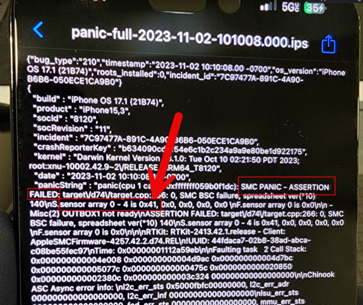
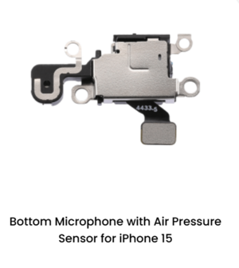

Before You Match Codes
The base Repair Wiki workflow is: test with known-good parts first, then open the newest
panic-full file on the device. After that, match the code or missing sensor line to the
correct model section below.
Where To Find The Panic Log
Settings 鈫?Privacy & Security 鈫?Analytics & Improvements 鈫?Analytics Data 鈫?
open the newest file starting with panic-full.
What To Look For
- Missing Sensors on older models
- SMC PANIC - ASSERTION FAILED
- Sensor Array with a hex code on newer models
Bench Rule
Use known-good parts. Repair Wiki repeatedly notes that bad or low-quality flexes can waste time and
give the same restart symptoms.
Example Panic Log Screens
These are actual images taken from the linked Repair Wiki pages. Use them to quickly recognize the kind of
panic-log screen, sensor-array code, or part location the customer device is showing.
This is the actual panic-log list example from the linked guide. Staff should open the newest
panic-full file first, then match the content to the model section below.

This is the actual 0x41 panic-log example from the linked page. It is used for
battery-data related faults on newer models.

This is the actual iPhone 15 air-pressure-sensor image from the linked model page. It helps staff
identify the part tied to newer charging-port and air-pressure panic patterns.
Universal Panic Log Codes For iPhone 13 And Newer
0x20 (32) = Charging circuit
0x40 (64) = Gas gauge
0x41 (65) = Battery data
0xa1 (161) = Battery sensor
0xa9 (169) = Battery data variant
0x400 (1024) = Gyro
0x800 (2048) = Charge port
0x1000 (4096) = Proximity
0x4000 (16384) = Battery sensor
0x20000 (131072) = Gyro (14 Pro+)
0x40000 (262144) = Charge port (14 Pro+)
0x80000 (524288) = Proximity (14鈥?7)
0x100000 (1048576) = Power button
0x200000 (2097152) = Front sensor / Wireless coil
0x300000 (3145728) = USB-C / charge port on Pro models
0x400000 (4194304) = Wireless coil
0x500000 (5242880) = Battery